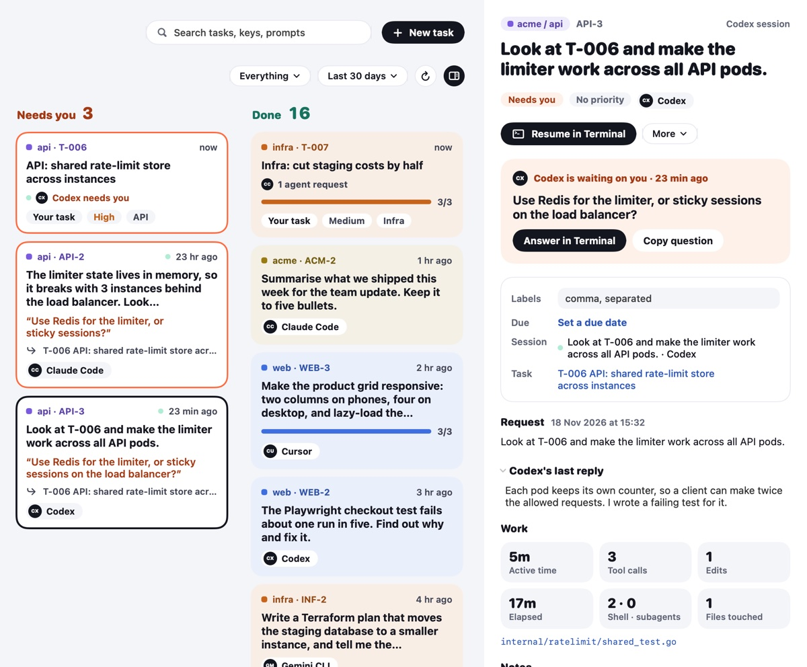
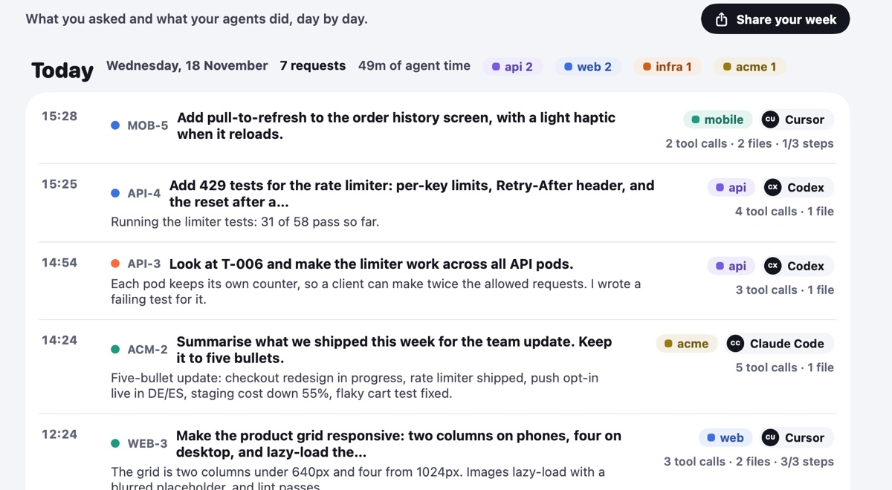

Know when Claude is waiting on you
Needs You gathers every session that ended on a question, with the question itself, the outcome so far and a Resume button.

A Mac app that turns your Claude Code sessions into tickets, next to the tasks you plan per project.

$ curl -fsSL https://aidarkazybekov.github.io/claude-board/install.sh | bash
Checks the download, installs to Applications and opens it, with no security prompt to click through. Run it again to update. Read the script.
A live copy of the demo board. Drag a card to another column, open one to see Claude's plan, and watch a session stop to ask you something.
That's the real thing, minus your own projects.
Download for MacNeeds You gathers every session that ended on a question, with the question itself, the outcome so far and a Resume button.

Your own backlog per app. Mention a key like T-004 in a prompt and the session links to it.

Plain markdown your team and Claude both read. Backlog.md compatible.
--- id: T-004 title: Checkout redesign priority: P1 status: in-progress ---
What you asked and what got done, day by day, with Claude's active time.

Requests per day and project, status at a glance, and when in the week you work with Claude.

Paste the one-line installer into Terminal. Or download the zip and approve it once in System Settings.
Point it at where your code lives, like ~/Developer. Every git repo becomes a project.
Use Claude Code as usual. The board fills in by itself every 20 seconds.
No. It reads ~/.claude and the desktop app's session list, read-only. It writes only to its own folder and, when you edit a task, to that task's markdown file.
No. There is no account, no server and no analytics. The app makes no network requests.
macOS 15 or later on Apple Silicon, and Claude Code: the CLI or the desktop app's Code tab. Intel Macs can build it from source.
The app isn't notarized yet. The one-line installer avoids this prompt. If you downloaded the zip, open the app once, then go to System Settings, Privacy & Security and click Open Anyway. macOS 15 removed the old right-click Open shortcut.
Yes. Keep tasks in a backlog/ folder in the repo. Everyone sees the same markdown files through git, and so does Claude.
Yes. Open Help, then Try the Demo Board. It runs on a made-up company and never touches your files.
Free, open source, and it stays on your Mac. Ideas and pull requests are welcome.